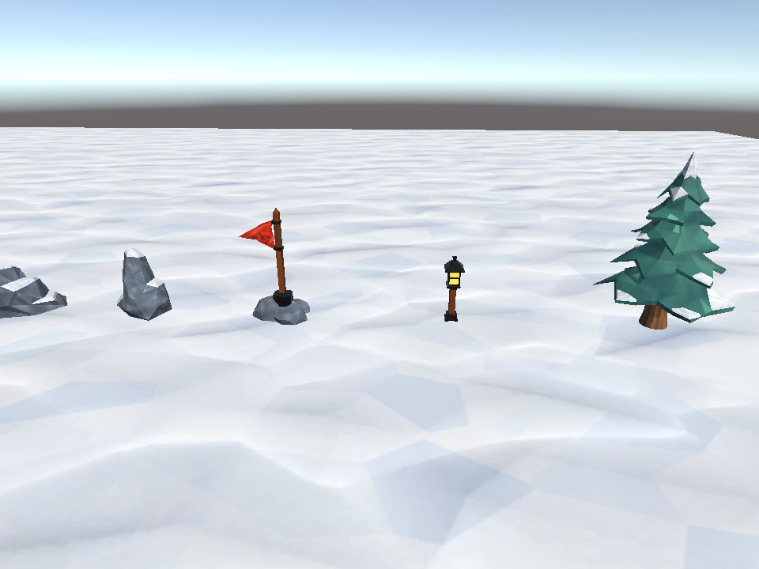
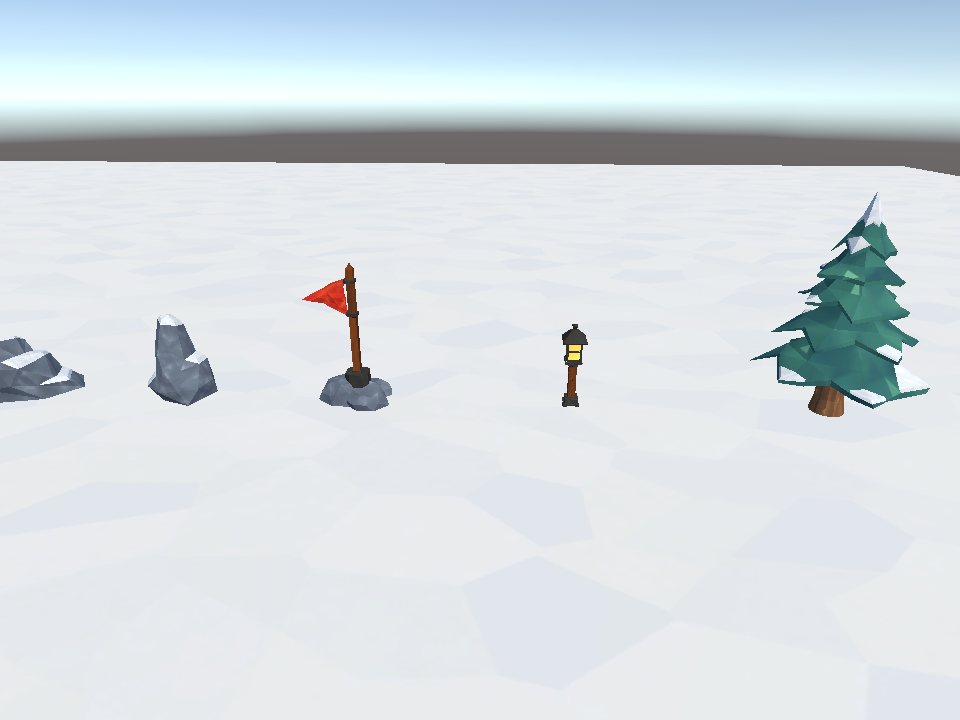
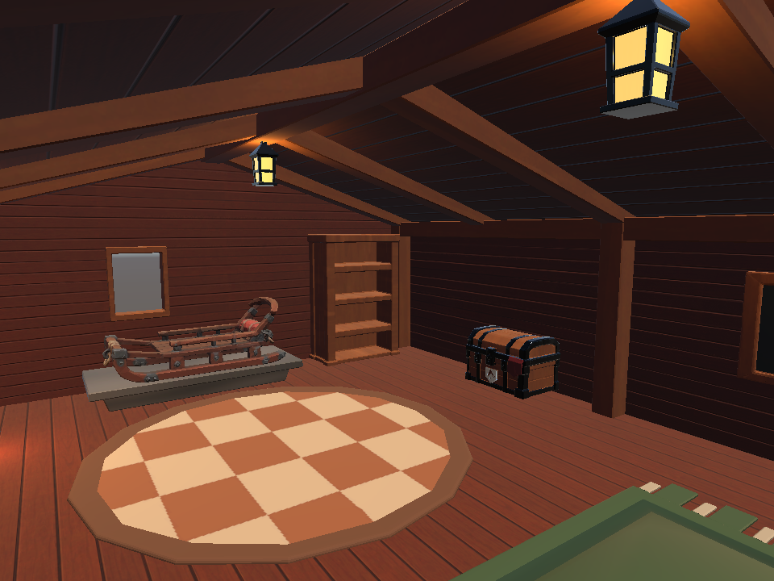
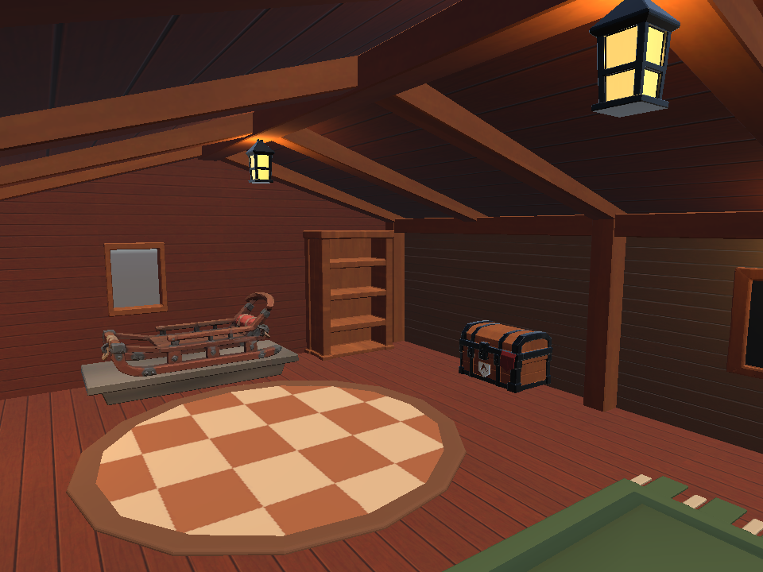

Git 5adfbe5의 아트 복사본 기준 · Unity 6000.3.18f1 / URP 17.3.0 · 같은 저장 카메라 · 960×720 · Linear · 실시간 그림자 및 후처리 OFF
원본 프로젝트에는 적용하지 않았습니다. 독립 검증 프로젝트의 렌더링이며 Quest 출력이나 실제 플레이 화면을 대신하지 않습니다.




실내 밝기 전체를 해결한 단계는 아닙니다. 개 돌봄 구역의 조명과 실제 베이크 결과는 추가 검증이 필요합니다.